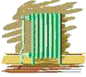
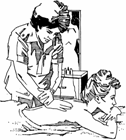
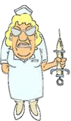
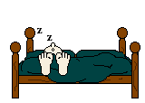

|
CLICK (gently!) on Granny's
|
 |
to close this page.
|
HOSPITAL CAPERS
This is not Viola in the picture. The hair-do is far too nice to look like Viola.
In addition to 9 months in the hospital for polio rehabilitation, Viola has had four major surgeries over the years: appendix, removal of half a kidney and a rib, cancer (uterus), part of colon and gallbladder removed.
Her sense of humor never left in spite of extremely serious days when she was a step from eternity. For example, as Viola was coming back to reality following her kidney surgery, the nurse was trying to arouse her by asking, "Mrs. Pahl - who is your doctor?" Well, Mrs. Pahl wasn't about to co-operate. "Why should I try to talk when she can look at my wristband and see the name of the doctor written there." So - Viola pointed to the wristband, not once, not twice, but five times. Finally, the nurse gave up and tried another tactic. "Mrs. Pahl, who is the Prime Minister of Canada." Viola pondered the question, not because she didn't know the Prime Minister's name, but because she didn't want to answer. "Should I reply with the name of the President of the USA?" she mused. But better sense prevailed. She reasoned that if she gave the incorrect answer, she might be considered delirious, and who knows what the nurse might do. Reluctantly, Viola proffered the correct answer, but she actually felt downhearted when she couldn't pull off
another stunt.
And then there was the time when the ritual thermometer was stuck in her mouth, like it or not. The nurse briefly left the room, and Viola grasped the opportunity. Next to the bed was the heat register, so she plucked the thermometer out of her mouth and held it on the heat register. Ah - it went up to a nice hot fever status.
|  |
When the nurse returned, she looked at the thermometer. Like a true professional, she never blinked nor did she show any emotion. The nurse left to record the unexpected temperature. "Aha," squealed Viola with delight, "I sure fooled her." But it was the nurse who had the last laugh. Every four hours for the next twelve hours - from 8:00 in the evening until 8:00 in the morning - Viola had to endure a thermometer in her mouth. She was too proud to tell the nurses that the sudden elevation in temperature was due to her prank. This was one prank that was never repeated.
Well now, out of all her hospital experiences, the following satirical thoughts birthed in Viola's mind, and she penned the following humorous article.


A. OBEDIENCE TRAINING SCHOOL FOR ANIMALS AND PATIENTS
This hilarious story was reported in a Honolulu newspaper, when Fred and Viola were there in the early 1980's.
Two very timid island girls embarked on their first trip to
the U.S. mainland They were overwhelmed with the hectic life style on the
continent compared with their isolated life on the islands. One day as they
were in the hotel elevator, Reggie Jackson, two huge bodyguards, and two
Doberman Pinscher dogs joined them. Frightened at the awesome sight of
physically huge men and possibly vicious dogs, the girls retreated to an
elevator corner. When Reggie Jackson barked a command to his dogs, "SIT," the
terrified girls reacted immediately, and they, too, immediately sat on the
elevator floor in unquestioning obedience.
The anecdote caused Viola to think of hospital "obedience" training to which patients are subjected. They are required to obey quickly - no questions asked! Said an exasperated parent, "I'm trying something new this summer. I'm sending the dog to camp, and the kids to obedience school!" Well, try a hospital ward for a crash course in obedience training. Viola wrote the following article for publication.
|
What does being in the hospital have in common with Dog
Obedience Training classes? Nurses, therapists, or other medical personnel,
speak in imperative intonations such as one encounters in prestigious
"finishing schools" for domesticated pets. Do you recognize a kinship in these
authoritative words that are directed at either ailing humans or cherished
four-legged creatures?
|
Roll Over
Sit Up
Eat your dinner
Walk
Jump! You can do it!
Take your medicine
And on, and on, and on. Whatever happened to the use of polite phrasing such as, "Would you like to sit up in bed or in your chair?" "When you are ready, we'll go for a short walk."
At a Doggy Obedience School, authority figures reward pooches with soothing phrases, timely tender touches, and favourite tidbits, which serve to mask distasteful commands. For these small favours, a dog will wag its tail in loyal gratitude. Likewise, humans can be decoyed into obedience by the "perks" their assertive professionals dangle before them.
(I'm always good, in case you haven't noticed!
And I'm not a girl - can't you see I'm seventy-eight years old?)
"You are a sweetheart." (Flattery will get you nowhere.)
"I'll get a glass of your favourite juice if you walk as far as the door."
(This sounds like bribery.)
|  |
Well, nursie is exhausted, and she secretly hopes that patients will sense her weariness and say, "No, don't bother." Some do. But not this lady. I respond affirmatively. However, I resist the temptation to add, "Please, nursie, I've been so good and obedient today. I'd not only like a back rub now, but perhaps several more during the night." She may construe my request as downright cheekiness, and I may not get a back rub the following evening. Because of her authority status, she possesses the power to pass me by whenever it suits her. So I meekly accept the offer at hand. Nursie's magic massage works; my blood resumes circulating, and my skin tingles.
Well, we can't win them all; I was proficient in at least one animal language. However, thinking of Sparky inspired a daring and brazen plan. Perhaps nursie could be fooled with cat-ese language. In spite of my illness, it was time to "get even" with the well-intentioned, but nonetheless, demanding authority figure.
Finally, after a tough day at obedience school, I laid back in bed, relaxed, and put my plan into action. Summoning my last reservoir of strength, I quietly started to MEOW. Although Sparky would have meowed his disapproval at my cat-ese accent, it was good enough to fool nursie know-it-all.
|  |  |
The medical drillmaster paused at the door, listened intently, and her face formed a quizzical expression as she detected a faint but familiar sound. Was her weary mind playing a trick? Did she really hear a cat meowing…? It couldn't be; no cats would ever be allowed in her ward! Professional decorum prevented her from asking the patients if they had heard the same sound. Because it appeared to come from my direction, she riveted her steely-grey eyes on me with a militant air which expressed "I-will-not-allow-nonsense-in-my-domain." However, I laid very still, closed my eyes to a mere slit, and breathed heavily as if I were blissfully sleeping.
As I saw a subdued nursie retreating from the room, I shouted an inward, silent HURRAH. I knew beyond a doubt she would go home and tell her family that due to overwork, she was hearing things which didn't exist. I felt ecstatic! My cat-ese strategy had worked.
You'll get an extra helping of your favourite cat food when I get home.
B. DON'T VISIT ME IN THE HOSPITAL
when church members are dying embersThe pastor meant well when he announced to the group of seniors that "the church's priority is people before projects." He suggested that illnesses, surgeries, etc. should be reported to the church office. The information would be followed up with a telephone call from the pastor who would pray with them and assure them that their plight would be drawn to the attention of the church through the Sunday bulletin. "I am very busy," he went on to say, "but if you are seriously ill, I will try to find time to visit you in the hospital."
Following the meeting, Viola spoke with the pastor. "Pastor," she said, "I wrote an article for a magazine, and in it I indicated that when I am ill, I do not want to see the pastor." The pastor tried to hide his shock at such a statement. Continued Viola, "I far prefer seeing my pastor when I am at home, where we can have a good chat together, share a chuckle, and find out how things are going at the church. I don't want to see my pastor when I am nauseous, under medication, looking like a hag, and feeling half-dead." (Excerpts from Viola's article are printed below.)
for the next ten years, will you visit me in my home instead?
HOSPITAL HAZARDS
I, personally, do NOT want to see a pastor when I'm wilting away in my hospital bed. Vanity tells me that I look gruesome; my pain is overwhelming; and my speech incoherent through medication. So if my pastor's policy is to visit only when one is near death's door - I hope he stays away for a long, long time. I don't need the reminder.
Of course, I need him when there is a death or serious family problems. But if I have to be sick or in trouble just to see my pastor face to face, forget it. Surely there must be a time once in awhile for a pastor to visit someone when that someone is articulate, can talk with him about many mutual issues, pray for him, and encourage him. As for other visitors, I am reluctant to have anyone visit with me. No offence. I know that my friends would do their best to be an encouragement. However, it is for their protection they should stay away. Why should they want to visit a miserable, self-pitying, bed-ridden, disheveled-looking old lady? I try to be nice when I'm hospitalized, but because of the added problem of polio, my four major surgeries have not been fun times.
With the exception of a private room, remember the ward contains people who are complete strangers, suddenly brought together through the common bond of suffering. Visitors need to observe hospital etiquette. If your friend does not have a medical problem which causes him severe illness (i.e. a broken leg), he is able to enjoy visitors. A sprightly lady with a minor ailment in my ward exercised her tongue most of the day in loud enough tones for the "deaf" lady next to her to enjoy the conversation. When it was visiting time, her visitors joined in with boisterous talk and laughter. On the first few days following surgery, I didn't even register on a scale of 1 to 10. I was a ZERO! A complete wipe-out! The loud talk, the loud laughs, and the loud movements of furniture, caused me severe discomfort.
When your pastor visits, he will doubtless offer a prayer, and it is likely that others in the ward will hear him. He should remember he is ministering to his member - it is not a time to preach an evangelistic message in the prayer, hoping to witness to others in the ward. "What is needed is not a pastor who is the source of all wisdom and the fount of all knowledge, but one who will be a sympathetic listener, and let the patient set the agenda. Understanding, acceptance, and love will take you a long way in a hospital ward," commented a pastor.
What is the cause of illness? A man who had tripped on the sidewalk was hospitalized for a broken leg. The deacon asserted, "Brother, this is of the devil." The pastor exclaimed, "Brother, this is for the glory of God." When the man's wife visited, she chided, "You clumsy idiot. Why did you have to fall over your feet and bring this on yourself?" In addition to theological dissertations on the mystery of suffering, a patient often gets big doses of futile clichés. A particularly irritating cliché is, "There are many who are a lot worse than you." (True, but there are thousands who are much better!) (See my link on HEALING for further comments.)
Exercise wisdom when bringing food and flowers to the hospital. Unfortunately for me, the scent of flowers or perfume in a small room is a hazard. Even in church, many people are "over-perfumed." I have had to move from my pew when a highly-scented person sat in front of me. Although I am able to relocate to another pew in church, I am unable to change the location of my hospital bed. Would it not be better to send these loving gifts to the patient's home AFTER he/she has left the hospital? When I arrived home from the hospital, I phoned the church office and said with a chuckle, "You can now take my name off the endangered species list. God has restored my health sufficiently so that I need no longer be mentioned in the bulletin."
Although I had a NO VISITORS sign hung in my hospital room, you won't find it around our home. Here, the sign reads VISITORS WELCOME! Any time. Any day. Yes, a potted plant without too much scent will be gladly received. Remember, the fragrance of Christ is IN us, not ON us! Resist the temptation to splash a little more cologne on your lapel! My husband, having subsisted on fried eggs while I was hospitalized, will be grateful for your thoughtfulness in bringing a delicious casserole. When you enter my domain, expect a huge dose of medicine. No matter how decrepit my body becomes, a "cheerful heart does good like medicine" (Proverbs 17:22 TLB), and I will share my joy in the Lord with you - it will NOT be hazardous to your health! Guaranteed!
C. PASTORS BEWARE!
I've heard for a long time:
The family called the minister to the hospital because Joe, the grandfather of the home, was dying. After gathering around the bedside, they noticed that Joe's condition was worsening. Unable to speak, he motioned for paper and pencil. The pastor carried a small notebook in his jacket pocket, and he gave it to Joe who immediately scribbled a message. Because Joe started to struggle for more breath, the pastor was detracted from reading the written message, and he quickly put the notebook back in his pocket to see if he could help the dying man. After a matter of minutes, Joe went home to be with the Lord.
Following his message at Joe's funeral, the pastor suddenly realized that he was wearing the same jacket he had worn in the hospital. "One more thing," exclaimed the minister. "Just before he passed away, Joe wrote a short message. I have it here. I'm sure it will contain inspiration for all of us." When the pastor took out the notepad, he suddenly turned white and nearly collapsed at the podium.
|
CLICK (gently!) on Granny's
|
|
to close this page.
|